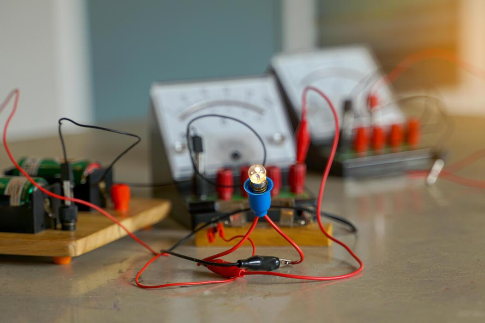
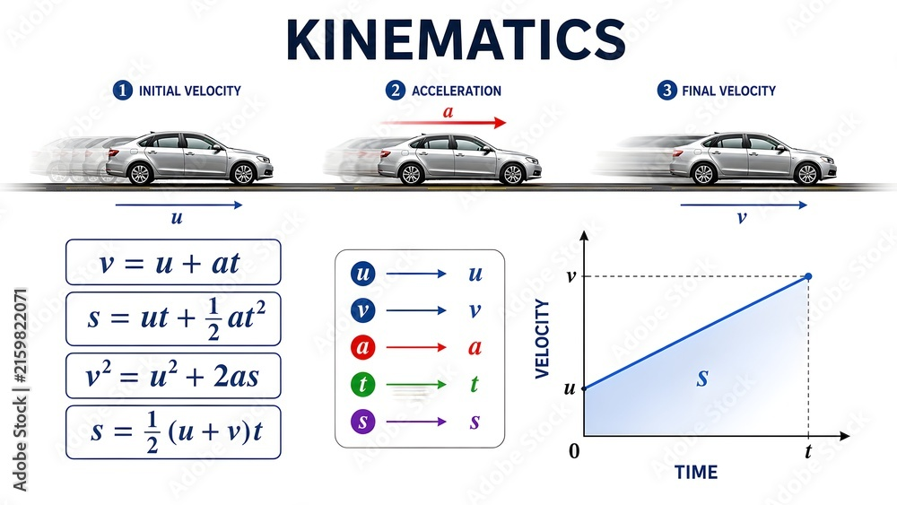
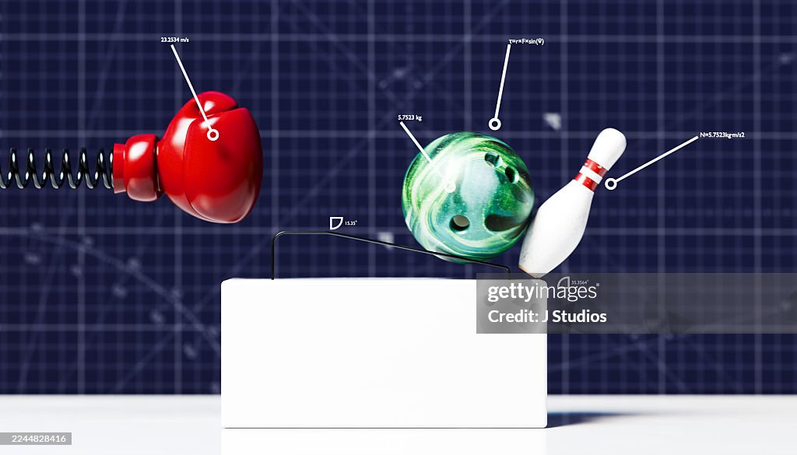

Experimental design, including solving problems set in a practical contex and including the selection of suitable apparatus, equipment and techniques for the proposed experiment.
Identification of variables that must be controlled, where appropriate.
Evaluation that an experimental method is appropriate to meet the expected outcomes.
How to use a wide range of practical apparatus and techniques correctly as outlined in this specification.
Appropriate units for measurements.
Presenting observations and data in an appropriate format.
Processing, analysing and interpreting qualitative and quantitative experimental results, including reaching valid conclusions where appropriate.
Use of appropriate mathematical skills for analysis of quantitative data
Appropriate use of significant figures.
Plotting and interpreting suitable graphs from experimental results, including selection and labelling of axes with appropriate scales, quantities and units.
Plotting and interpreting suitable graphs from experimental results, including measurement of gradients and intercepts.
How to evaluate results and draw conclusions.
The identification of anomalies in experimental measurements.
The limitations in experimental procedures
Precision and accuracy of measurements and data, including margins of error, calculating percentage errors and uncertainties in apparatus.
The refining of experimental design by suggestion of improvements to the procedures and apparatus.
Apply investigative approaches and methods to practical work including how to solve problems in a practical context.
Safely and correctly use a range of practical equipment and materials including identification of potential hazards and how to minimise the risks involved.
Follow written instructions.
Make and record observations/measurements.
Keep appropriate records of experimental activities.
Present information and data in a scientific way.
Use appropriate software and tools to process data, carry out research and report findings.
Use online and offline research skills including websites, textbooks and other printed scientific sources of information.
Correctly cite sources of information using either the Vancouver or Harvard referencing system.
Use a wide range of experimental and practical instruments, equipment and techniques appropriate to the knowledge and understanding included in the specification.
Use of appropriate analogue apparatus to record a range of measurements (to include length/distance, temperature, pressure, force, angles and volume) and to interpolate between scale markings.
Use of appropriate digital instruments, including electrical multimeters, to obtain a range of measurements (to include time, current, voltage, resistance and mass).
Use of methods to increase accuracy of measurements, such as timing over multiple oscillations, or use of fiduciary marker, set square or plumb line.
Use of a stopwatch or light gates for timing.
Use of calipers and micrometers for small distances, using digital or vernier scales.
Correctly constructing circuits from circuit diagrams using DC power supplies, cells, and a range of circuit components, including those where polarity is important (e.g diodes).
Designing, constructing and checking circuits using DC power supplies, cells, and a range of circuit components.
Use of a signal generator and oscilloscope, including volts/division and time- base.
Generating and measuring waves, using microphone and loudspeaker, or ripple tank, or vibration transducer, or microwave/radio wave source.
Use of a laser or light source to investigate characteristics of light, including interference and diffraction.
Use of ICT such as computer modelling, or data logger with a variety of sensors to collect data, or use of software to process data.
Use of ionising radiation, including detectors.

Physical quantities have a numerical value and a unit.
Making estimates of physical quantities listed in this specification.
Systeme internationale (S.I.) base quantities and their units - mass (kg), length (m), time (s), current (A), temperature (K), amount of substance (mol).
Derived units of S.I. base units.
Units listed in this specification.
Checking the homogeneity of physical equations using S.I. base units.
Prefixes and their symbols to indicate decimal submultiples or multiples of units - pico (p), nano (n), micro (µ), milli (m), centi (c), deci (d), kilo (k), mega (M), giga (G), tera (T).
The conventions used for labelling graph axes and table columns.
Systematic errors (including zero errors) and random errors in measurements.
Precision and accuracy.
Absolute and percentage uncertainties when data are combined by addition, subtraction, multiplication, division and raising to powers.
Graphical treatment of errors and uncertainties; line of best fit; worst line; absolute and percentage uncertainties; percentage difference.
Scalar and vector quantities including examples of each.
Vector addition and subtraction.
Vector triangles to determine the resultant of any two coplanar vectors by calculation or by scale drawing.
Resolving a vector into two perpendicular components: Fx = F cos Θ, Fy = F sin Θ

Displacement, instantaneous speed, average speed, velocity and acceleration.
Graphical representations of displacement, speed, velocity and acceleration.
Displacement-time graphs; velocity is gradient.
Velocity-time graphs; acceleration is gradient; displacement is area under graph. You will also be expected to estimate the area under non-linear graphs.
The equations of motion for constant acceleration in a straight line, including motion of bodies falling in a uniform gravitational field without air resistance. SUVAT equations.
Techniques and procedures used to investigate the motion and collisions of objects. Apparatus may include trolleys, air-track gliders, ticker timers, light gates, data-loggers and video techniques.
Acceleration, g, of free fall.
Techniques and procedures used to determine the acceleration of free fall in the laboratory using trapdoor and electromagnet arrangement or light gates and timer.
Reaction time and thinking distance; braking distance and stopping distance for a vehicle.
The independence of the vertical and horizontal motion of a projectile.
Two-dimensional motion of a projectile with constant velocity in one direction and constant acceleration in a perpendicular direction.
Net force = mass x acceleration; F = ma
The newton as the unit of force.
Weight of an object; W = mg
The terms tension, normal contact force, upthrust and friction.
Free-body diagrams.
One- and two-dimensional motion under constant force.
Drag as the frictional force experienced by an object travelling through a fluid.
Factors affecting drag for an object travelling through air.
Motion of objects falling in a uniform gravitational field in the presence of drag.
Terminal velocity.
Techniques and procedures used to determine terminal velocity in fluids, e.g. ball-bearing in a viscous liquid or cones in air.
Moment of force.
Couple; torque of a couple.
The principle of moments.
Centre of mass; centre of gravity; experimental determination of centre of gravity.
Equilibrium of an object under the action of forces and torques.
Condition for equilibrium of three coplanar forces; triangle of forces.
Density; ρ = m / V
Pressure for solids, liquids and gases; p=F/A
Upthrust on an object in a fluid; Archimedes' principle; p=hρg
Work done by a force; the unit joule.
W = Fx cos Θ for work done by a force.
The principle of conservation of energy.
Energy in different forms; transfer and conservation.
Transfer of energy is equal to work done.
Kinetic energy of an object; Ek = 1/2 mv2 You will also be expected to recall this equation and derive it from first principles.
Gravitational potential energy of an object in a uniform gravitational field; Ep = mgh You will also be expected to recall this equation and derive it from first principles.
The exchange between gravitational potential energy and kinetic energy.
Power; the unit watt; P = W/ t
Power; P = Fv You will also be expected to derive this equation from first principles.
Efficiency of a mechanical system; efficiency = useful output energy x 100% / total input energy
Tensile and compressive deformation; extension and compression.
Hooke's law.
Force constant k of a spring or wire; F = kx
Force-extension (or compression) graphs for springs and wires.
Techniques and procedures used to investigate force–extension characteristics for arrangements which may include springs, rubber bands, polythene strips.
Force-extension (or compression) graph where work done is area under graph.
Elastic potential energy; E = 1/2Fx E = 1/2 k2
Stress, strain and ultimate tensile strength.
Young's modulus = Tensile stress Tensile strain E = σ/ε
Techniques and procedures used to determine the Young's modulus for a metal.
Stress-strain graphs for typical ductile, brittle and polymeric materials.
Elastic and plastic deformations of materials
Newton's three laws of motion.
Linear momentum; vector nature of momentum; p = mv
Net force = rate of change of momentum; F = Δp / Δt
Impulse of a force; impulse = FΔt
Impulse is equal to the area under a force-time graph. You will also be expected to estimate the area under non-linear graphs
The principle of conservation of momentum.
Collisions and interaction of bodies in one dimension and in two dimensions. Two-dimensional problems will only be assessed at A level.
Perfectly elastic collision and inelastic collision.
Thermal equilibrium.
Absolute scale of temperature (i.e. the thermodynamic scale) that does not depend on property of any particular substance.
Temperature measurements both in degrees Celsius (°C) and in kelvin (K).
T (K) ≈ θ (°C) = 273
Solids, liquids and gases in terms of the spacing, ordering and motion of atoms or molecules.
Simple kinetic model for solids, liquids and gases.
Brownian motion in terms of the kinetic model of matter and a simple demonstration using smoke particles suspended in air.
Internal energy as the sum of the random distribution of kinetic and potential energies associated with the molecules of a system.
Absolute zero (0 K) as the lowest limit for temperature; the temperature at which a substance has minimum internal energy.
Increase in the internal energy of a body as its temperature rises.
Changes in the internal energy of a substance during change of phase; constant temperature during change of phase.
Specific heat capacity of a substance; the equation; E = mcΔθ
An electrical experiment to determine the specific heat capacity of a metal or a liquid.
Techniques and procedures used for an electrical method to determine the specific heat capacity of a metal block and a liquid.
Specific latent heat of fusion and specific latent heat of vaporisation; E = mL
An electrical experiment to determine the specific latent heat of fusion and vaporisation.
Techniques and procedures used for an electrical method to determine the specific latent heat of a solid and a liquid.
Amount of substance in moles; Avogadro constant NA equals 6.02 x 1023 mol-1
Model of kinetic theory of gases; Assumptions for the model: 1. Large number of molecules in random, rapid motion. 2. Particles (atoms or molecules) occupy negligible volume compared to the volume of gas. 3. All collisions are perfectly elastic and the time of the collisions is negligible compared to the time between collisions. 4. Negligible forces between particles except during collision.
Pressure in terms of this model of kinetic theory of gases.
The equation of state of an ideal gas; pV = nRT Where n is the number of moles.
Techniques and procedures used to investigate PV = constant (Boyle's law) and P / T = constant.
An estimation of absolute zero using variation of gas temperature with pressure.
The equation; pV= 1/3 Nmc2 Where N is the number of particles (atoms or molecules) and c2 is the mean square speed.
Root mean square (r.m.s.) speed; mean square speed. You should know about the general characteristics of the Maxwell-Boltzmann distribution.
The Boltzmann constant; k =R / NA
The equations; pV = NkT 1/2 mc2 = 3/2 kT You will also be expected to know the derivation of the equation 1/2 mc2 = 3/2 kT from pV= 1/3 Nmc2 and pV = NkT
Internal energy of an ideal gas.
The radian as a measure of angle.
Period and frequency of an object in circular motion.
Angular velocity ω; ω = 2π / T and ω = 2πf
A constant net force perpendicular to the velocity of an object causes it to travel in a circular path.
Constant speed in a circle; v = ωr
Centripetal acceleration; a = v2/r and a = ω2r
Centripetal force; F = mv2/r and F = mω2r
Techniques and procedures used to investigate circular motion using a whirling bung.
Displacement, amplitude, period, frequency, angular frequency and phase difference.
Angular frequency ω; ω = 2π / T and ω = 2πf
Simple harmonic motion; defining equation; a = - ω2x
Techniques and procedures used to determine the period/frequency of simple harmonic oscillations.
Solutions to the equation a = - ω2x for example; x = A cos ωt or x = A sin ωt
Velocity; v = ± ω √ (A2 - x2) Hence vmax = ωA
The period of a simple harmonic oscillator is independent of its amplitude (isochronous oscillator).
Graphical methods to relate the changes in displacement, velocity and acceleration during simple harmonic motion.
Interchange between kinetic and potential energy during simple harmonic motion.
Energy-displacement graphs for a simple harmonic oscillator.
Free and forced oscillations.
The effects of damping on an oscillatory system.
Observe forced and damped oscillations for a range of systems.
Resonance; natural frequency.
Amplitude-driving frequency graphs for forced oscillators.
Practical examples of forced oscillations and resonance.
Gravitational fields are due to objects having mass.
Modelling the mass of a spherical object as a point mass at its centre.
Gravitational field lines to map gravitational fields.
Gravitational field strength; g = F / m
The concept of gravitational fields as being one of a number of forms of field giving rise to a force.
Newton's law of gravitation for the force between two point masses; F = - GMm / r2
Gravitational field strength for a point mass; g = - GM / r2
Gravitational field strength is uniform close to the surface of the Earth and numerically equal to the acceleration of free fall.
Kepler's three laws of planetary motion.
The centripetal force on a planet is provided by the gravitational force between it and the Sun.
The equation; T2 = (4π2 / GM) r3 You will also be expected to derive this equation from first principles.
The relationship for Kepler's third law T2 ∝ r3 applied to systems other than our solar system.
Geostationary orbit; uses of geostationary satellites.
Gravitational potential at a point as the work done in bringing unit mass from infinity to the point; gravitational potential is zero at infinity.
Gravitational potential at a distance r from a point mass M; changes in gravitational potential; Vg = - GM / r
Force-distance graph for a point or spherical mass; work done is area under graph.
Gravitational potential energy at a distance r from a point mass M; E = mVg = -GMm /r
Escape velocity.
The terms planets, planetary satellites, comets, solar systems, galaxies and the Universe.
Formation of a star from interstellar dust and gas in terms of gravitational collapse, fusion of hydrogen into helium, radiation and gas pressure.
Evolution of a low-mass star like our Sun into a red giant and white dwarf; planetary nebula.
Characteristics of a white dwarf; electron degeneracy pressure; Chandrasekhar limit.
Evolution of a massive star into a red super giant and then either a neutron star or black hole; supernova.
Characteristics of a neutron star and a black hole.
Hertzsprung-Russell (HR) diagram as luminosity-temperature plot; main sequence; red giants; super red giants; white dwarfs.
Energy levels of electrons in isolated gas atoms.
The idea that energy levels have negative values.
Emission spectral lines from hot gases in terms of emission of photons and transition of electrons between discrete energy levels.
The equations; hf = ΔE and hc / λ = ΔE
Different atoms have different spectral lines which can be used to identify elements within stars.
Continuous spectrum, emission line spectrum and absorption line spectrum.
Transmission diffraction grating used to determine the wavelength of light.
The condition for maxima d sin θ =nλ where d is the grating spacing.
Use of Wien's displacement law to estimate the peak surface temperature (of a star); λmax ∝ 1 / T
Luminosity L of a star; Stefan's law: L = 4πr2σT4 Where σ is the Stefan constant.
Use of Wien's displacement law and Stefan's law to estimate the radius of a star.
Distances measured in astronomical unit (AU), light-year (ly) and parsec (pc).
Stellar parallax; distances the parsec (pc).
The equation; p = 1 / d Where p is the parallax in seconds of arc and d is the distance in parsec.
The Cosmological principle; universe is homogeneous, isotropic and the laws of physics are universal.
Doppler effect; Doppler shift of electromagnetic radiation.
Doppler equation; Δλ / λ ≈ Δf / f ≈ v / c For a source of electromagnetic radiation moving relative to an observer.
Hubble's law; v ≈ H0 d for receding galaxies Where H0 is the Hubble constant.
Model of an expanding universe supported by galactic red shift.
Hubble constant H0 in both units - km s-1 Mpc-1 and s-1
The Big Bang theory.
Experimental evidence for the Big Bang theory from microwave background radiation at a temperature of 2.7 K.
The idea that the Big Bang gave rise to the expansion of space-time.
Estimation for the age of the universe; t ≈ H0-1
Evolution of the universe after the Big Bang to the present.
Current ideas; universe is made up of dark energy, dark matter, and a small percentage of ordinary matter.